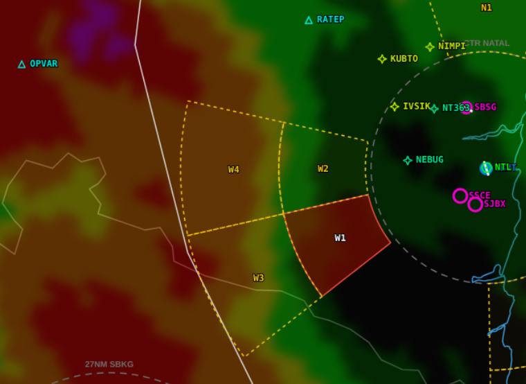

Sistema avançado de controle de aproximação que integra meteorologia de alta resolução, dados operacionais e alertas em tempo real para ampliar a consciência situacional.

O SOPHIA APP foi concebido para apoiar órgãos de aproximação com uma visão integrada do cenário operacional, reduzindo a necessidade de consulta dispersa a múltiplas fontes paralelas.
Ao reunir meteorologia, alertas, informações geoespaciais e elementos críticos à decisão em um único ponto de visualização, o sistema ajuda a sustentar respostas mais rápidas, consistentes e documentáveis.
Tecnologia orientada a segurança, leitura rápida do cenário e suporte contínuo à tomada de decisão operacional.
Gestão eficiente de aeronaves em fase de descida e aproximação final, com suporte contextualizado para leitura de tráfego e organização do fluxo.
Acesso direto a dados meteorológicos de alta resolução com apoio do satélite GOES 19, ampliando a previsibilidade do cenário operacional.
Visualização geoespacial de tráfego, meteorologia e pontos de atenção em um mesmo painel, reduzindo a fragmentação informacional.
Notificações proativas sobre mudanças críticas, conflitos potenciais e eventos meteorológicos relevantes para a operação.
O SOPHIA APP foi estruturado para operar em ambientes críticos com foco em confiabilidade, rapidez e suporte consistente ao trabalho do controlador.
A proposta do produto é transformar excesso de consulta paralela em leitura rápida de contexto, preservando foco e rastreabilidade.
Coleta e processamento estruturado de insumos operacionais e meteorológicos relevantes ao cenário de aproximação.
Painéis de leitura rápida, organizados para reduzir dispersão de atenção e melhorar a interpretação do contexto em curso.
Registro dos eventos e interações para apoiar auditoria, investigação e maturidade contínua da operação.
Entre em contato para agendar uma demonstração e mostrar como o sistema pode apoiar operações ATS com mais contexto e previsibilidade.